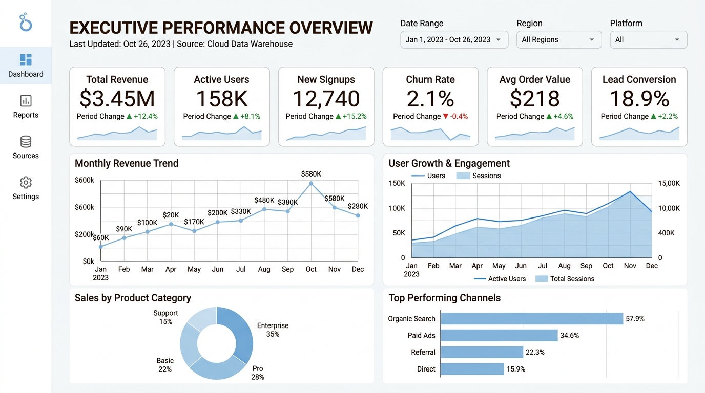
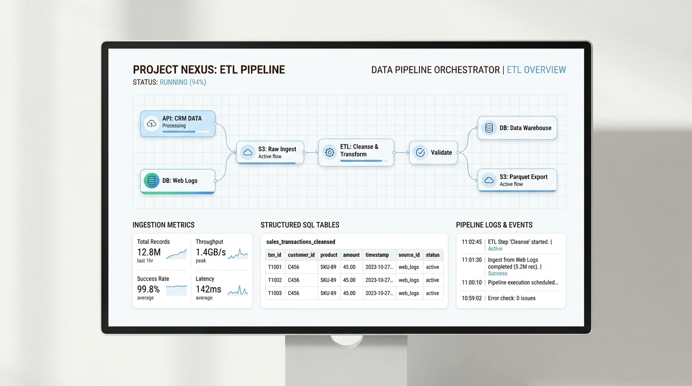
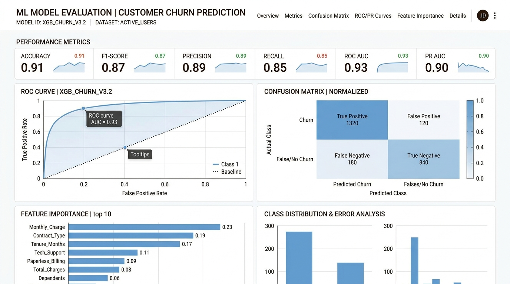
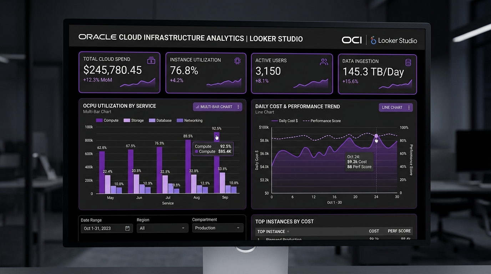

Estudante de Ciência da Computação com foco em Dados, Analytics e Business Intelligence, combinando conhecimentos técnicos em Python, SQL (MySQL) e ferramentas analíticas com sólida experiência profissional em Trade Marketing e produção audiovisual. Foco em organizar dados, estruturar análises e transformar informações em insights aplicáveis a decisões de negócio.
Experiência em fluxos e entregas para grandes marcas e canais
Estudante de Ciência da Computação unindo repertório técnico em dados, vivência corporativa em Trade Marketing e rigor de processos desenvolvido no audiovisual.
Sou graduanda em Ciência da Computação pela Universidade Anhembi Morumbi (2024–2028), com especialização prática em Data Science pela Alura + Oracle (mais de 130 horas de formação), especialização em Marketing pela Alura (2026) e certificação Oracle Cloud Infrastructure (OCI) Foundations Associate. Possuo ainda formação prévia em Comunicação pela Anhembi Morumbi (2010–2013).
Minha trajetória profissional reúne experiência em ambientes corporativos de alta demanda: atuei em Trade Marketing na Mondial e Aiwa — participando de iniciativas de organização e análise de dados sobre desempenho de produtos e conteúdo em marketplaces, além de projetos com IA que resultaram em prêmio de inovação em 2026. Anteriormente, construí uma carreira sólida em pós-produção audiovisual na Sentimental Filme e Polar Filmes, finalizando projetos com rigorosas especificações técnicas para players globais como Netflix, HBO, Globoplay e Amazon Prime Video, além de projeto para a Rede Globo indicado ao Emmy.
Minha transição para a área de Dados não é uma ruptura, mas uma evolução profissional. Trago competências consolidadas em organização de processos, controle de qualidade (QC), cumprimento de prazos críticos, atenção minuciosa aos detalhes e visão prática de negócios. Combino essa bagagem ao conhecimento técnico em Python, SQL (MySQL), modelagem analítica, Business Intelligence e fundamentos de Machine Learning para solucionar problemas reais de negócio.
Habilidades consolidadas na trajetória profissional e aplicadas na área técnica:
Estruturação metódica de etapas operacionais, gestão de fluxos de trabalho e controle rigoroso de dados do início ao fim.
Histórico de entregas aprovadas sob especificações técnicas rígidas de canais globais, sem tolerância a inconsistências.
Capacidade de diagnosticar falhas, contornar imprevistos técnicos e manter entregas com pontualidade em cenários corporativos exigentes.
Compreensão de objetivos comerciais, métricas de performance de marketplaces e foco em transformar dados em valor real.
Conhecimentos práticos e honestos organizados por domínios técnicos de dados, engenharia e inteligência de negócios.
Python • SQL • Pandas • NumPy • EDA
Manipulação de dados, scripts de automação, consultas relacionais e análise exploratória para identificação de inconsistências e preparação de conjuntos de dados analíticos.
Looker Studio • Excel • Sheets • KPIs
Desenvolvimento de dashboards interativos e relatórios estruturados para acompanhamento de KPIs de negócio e suporte a decisões operacionais e de marketing.
ETL / ELT • MySQL • OCI • Git • GitHub
Fundamentos de extração, transformação e carga (ETL/ELT), modelagem relacional de tabelas, fundamentos de arquitetura em nuvem Oracle (OCI) e versionamento de código com Git/GitHub.
Scikit-learn • Aprendizado Supervisionado • Métricas
Estudo e aplicação prática de algoritmos supervisionados de classificação e regressão, divisão de conjuntos de treino/teste, preparação de variáveis e avaliação metódica de métricas.
Automação de Processos • Workflows com IA
Exploração e aplicação de ferramentas de inteligência artificial para otimização de rotinas de trabalho, automação de etapas operacionais e produtividade técnica.
Universidade Anhembi Morumbi
2024 – 2028
Formação em fundamentos de computação, estruturas de dados, algoritmos, cálculo, bancos de dados relacionais e distribuídos, engenharia de software e inteligência artificial.
Alura + Oracle Next Education
2025 – 2026
Imersão técnica com mais de 130 horas cobrindo todo o ciclo de vida dos dados: programação em Python (Pandas, NumPy), modelagem relacional com MySQL, fundamentos de Machine Learning e computação em nuvem Oracle.
Alura
2026
Formação voltada a estratégias de marketing digital, análise de métricas e KPIs de desempenho de canais e campanhas, e inteligência de dados aplicada a Trade Marketing e marketplaces.
Universidade Anhembi Morumbi
2010 – 2013
Formação de base que estruturou rigor em controle de qualidade, organização de fluxos de trabalho e entrega conforme especificações técnicas de grandes players.
Experiência prática em Trade Marketing, publicidade e produção audiovisual, aplicando rigor técnico, controle de qualidade e foco em processos.
Editora de Vídeo | Trade Marketing
Produção e adaptação de conteúdo digital para produtos e canais de marketplace, com atuação em iniciativas de organização e análise de informações para apoio às decisões de Trade Marketing.
Editora de Vídeo | Publicidade
Atuação em projetos publicitários de grande porte, com gestão de versões e materiais, organização de fluxos de trabalho, controle de qualidade e cumprimento de prazos.
Especialista em Finalização | Pós-produção
Gestão e finalização técnica de materiais audiovisuais seguindo rigorosos padrões técnicos internacionais de plataformas globais de streaming.
Certificação internacional comprovando fundamentos em arquitetura de nuvem Oracle (OCI), conceitos de bancos de dados autônomos (Autonomous Database), segurança (IAM) e governança em nuvem.
Participação em equipes colaborativas multidisciplinares simulando dinâmica ágil de software e dados para resolução de problemas reais com Git e metodologias ágeis.
Projetos práticos demonstrando aplicação de análise de dados, modelagem, pipelines e visualização de indicadores de negócio.

Iniciativa voltada à organização e estruturação de informações sobre produtos e conteúdos digitais em marketplaces, desenvolvendo uma estrutura analítica para acompanhar indicadores e investigar oportunidades de melhoria.

Construção de pipeline de extração, tratamento e limpeza de dados utilizando Python e Pandas, com carregamento em banco de dados relacional MySQL e escrita de consultas analíticas estruturadas.

Estudo e aplicação prática de algoritmos supervisionados com Scikit-Learn: análise exploratória (EDA), preparação de atributos e avaliação fundamentada de métricas de classificação.

Desenvolvimento de painéis interativos no Google Looker Studio e planilhas integradas, organizando métricas essenciais para visualização clara de desempenho e apoio à tomada de decisão.